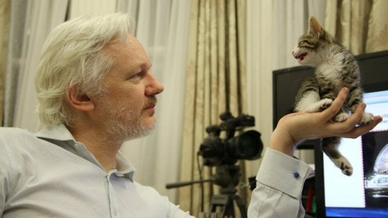

Interesting facts about Julian
- Julian Assange loves cats. This is why Joe admires him.
- Julian Assange recalls moving over 50 times and attending 37 different schools throughout his childhood.
- Julian Assange started a bachelor of science degree at Central Queensland University focusing on math. He averaged a D and dropped out to focus on WikiLeaks.
- Julian Assange is known to communicate with friends via encrypted cell phones.
- Julian Assange only uses cash and often travels under false names.
- As a teenager Julian Assange cowrote Underground: Tales of Hacking.
- A movie about Wikileaks is being released called The Fifth Estate and apparently Julian is not a fan. Assange urged Benedict Cumberbatch not to do the film, calling it a "massive propaganda attack."
- Assange once wrote an open letter to France's president, in which he claimed that his children were forced to change their identities and reduce their contact with him because they were being threatened due to their father's controversial work
- He has been romantically linked to Pamela Anderson